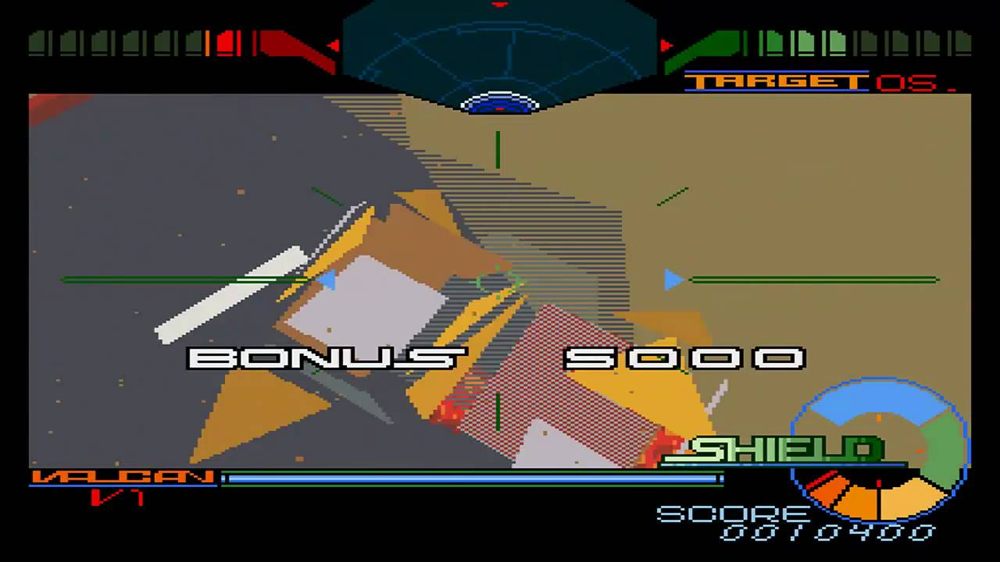
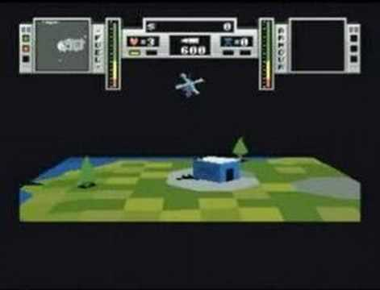
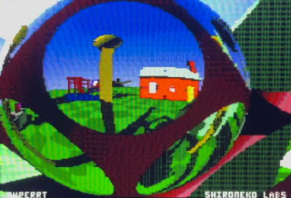
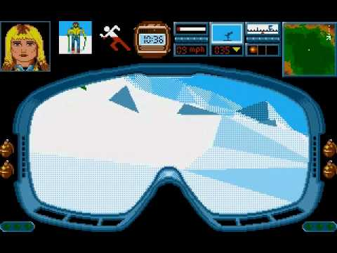
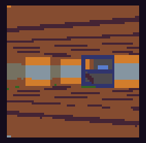
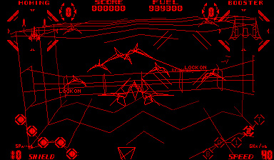
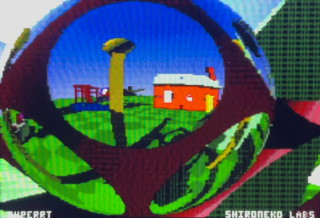
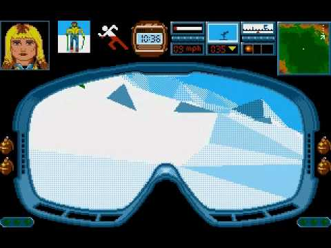
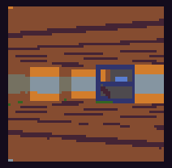
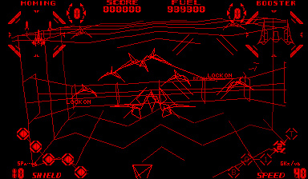

Low poly 3D
I love flat shaded and dithered early 3D graphics.
Geograph Seal
Zeewolf 2
 [[https://www.sockmonsters.com/TheMakingOfZarch.html Zarch/Virus]]
[[https://www.shironekolabs.com/posts/superrt SuperRT]]
[[https://www.youtube.com/watch?v=e30cbYtOfz8&feature=emb_title Midwinter]]
[[https://verysoftwares.itch.io/sunray-valley Sunray Valley]]
Red Alarm
[[https://www.sockmonsters.com/TheMakingOfZarch.html Zarch/Virus]]
[[https://www.shironekolabs.com/posts/superrt SuperRT]]
[[https://www.youtube.com/watch?v=e30cbYtOfz8&feature=emb_title Midwinter]]
[[https://verysoftwares.itch.io/sunray-valley Sunray Valley]]
Red Alarm